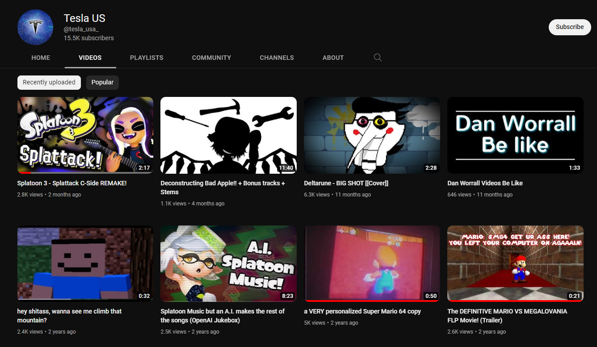
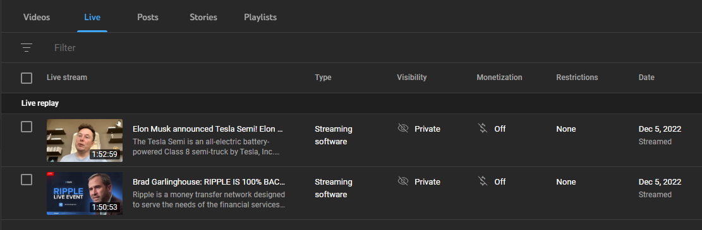

I don't like this place, take me home
On december 5th of this year my Youtube Channel (and also my old Gmail account) got hacked.
I couldn't log into my gmail account because my password had been changed.
Tried recovery email and NOTHING, tried recovery phone number and nothing, even my 2FA was somehow bypassed and turned off
Some Guy in my discord server was like "DAN LOOK AT YOUR YOUTUBE CHANNEL"
Shit was the weirdest shit? I suddenly found out that I was fucking TESLA
YES I did notify Youtube about what was going on, they were like "Oh you can ask Google to help you recover your account while we recover your channel"
NEEDLESS to say, Google didn't help SHIT. They kept me going in circles doing tons of nothing.
On a serious note now, it's funny how Google is all like "We want to make your account as secure as possible! 2FA! Recovery phone number! Recover email address!"
but when all those security features are hijacked and bypassed then the damn security features turn against you.
WHILE Google was having me do acrobatics, Youtube was trying to recover my channel since it accidentally got deleted because "Impersonation" or some shit.
AND IT WORKED, they transfered the ownership to my new account and everything's back on track.
The thing is up and still working like the good'ol channel I used to have!
STILL DOESN'T MEAN THAT I HAVE RECOVERED MY OLD GMAIL ACCOUNT DIJGHIKGJADKGHJKLDAGHJKLAD thanks Google for being very useful!!! (very sarcastic)
ALSO the stupid fucking scam livestreams are archived lmao, may be the reason my channel got deleted.
People, you gotta be REALLY FUCKING CAREFUL doing shit online.
Don't download weird ass files, don't enter shaddy ass looking websites (Mine is very shaddy looking I know BUT I SWEAR IT DON'T HAVE ANY VIRUSES‼️)
Don't click suspicious ass links (this goes to you, Discord users), AND FOR THE LOVE OF GOD go get some good amazing antivirus like Malwarebytes, AVG, Avast or even ESET.
Windows Defender will only get you so far.
But by FAR, the best antivirus is your own COMMON SENSE.
No, I wasn't stupid enough to click Free Discord Nitro links. I don't even remember entering any weird ass sites or downloading Area 51 files when everything happened?
Really shows that NO ONE is safe online. Y'all gotta be careful as shit for real...